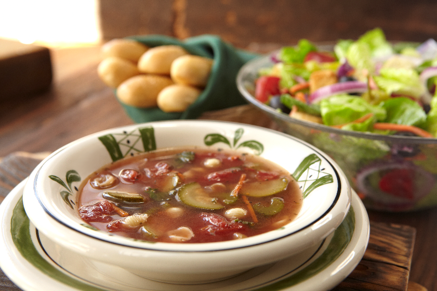
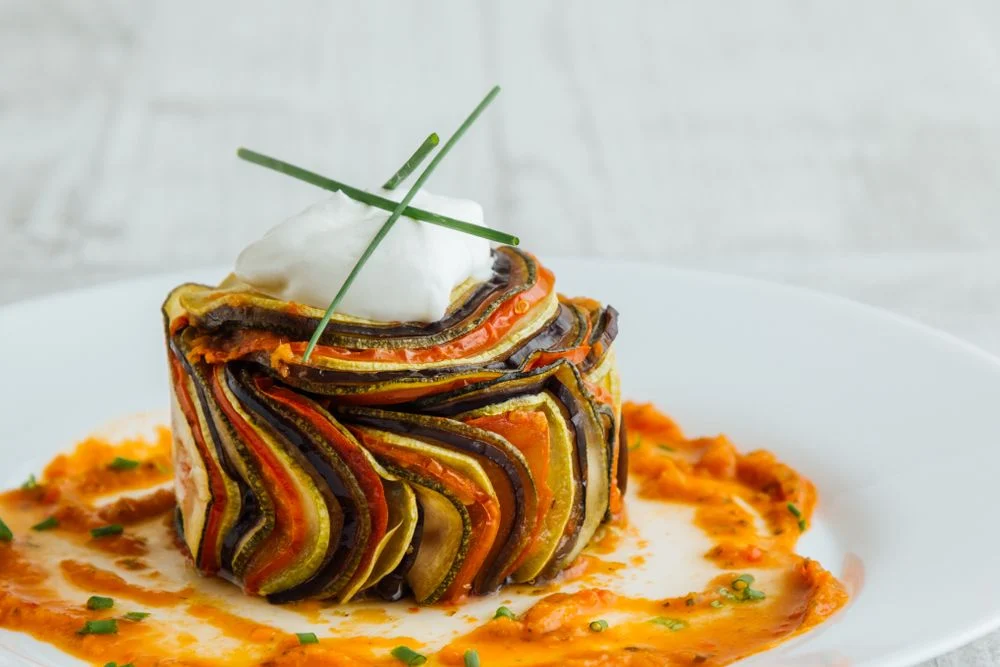

Espaguete do chefe

O espaguete é uma massa longa e fina que se originou na Itália. É um dos pratos mais populares da culinária italiana. e pode ser acompanhado por uma variedade de molhos, como bolonhesa, carbonara ou pomodoro. É uma opção versátil que agrada a muitos paladares.
sopa italiana

A sopa italiana é conhecida por sua riqueza de sabores e ingredientes frescos, como tomate, macarrão e ervas aromáticas. É uma opção reconfortante e completa, perfeita para os dias mais frios. Com sua combinação de ingredientes simples e técnicas de preparo tradicionais, a sopa italiana cativa paladares ao redor do mundo.
Ratatuile

O ratatouille é um prato tradicional da culinária francesa feito com legumes frescos, como tomate, abobrinha, berinjela, pimentão e cebola. É um prato colorido, saudável e cheio de sabores intensos. Pode ser servido como acompanhamento ou como prato principal.